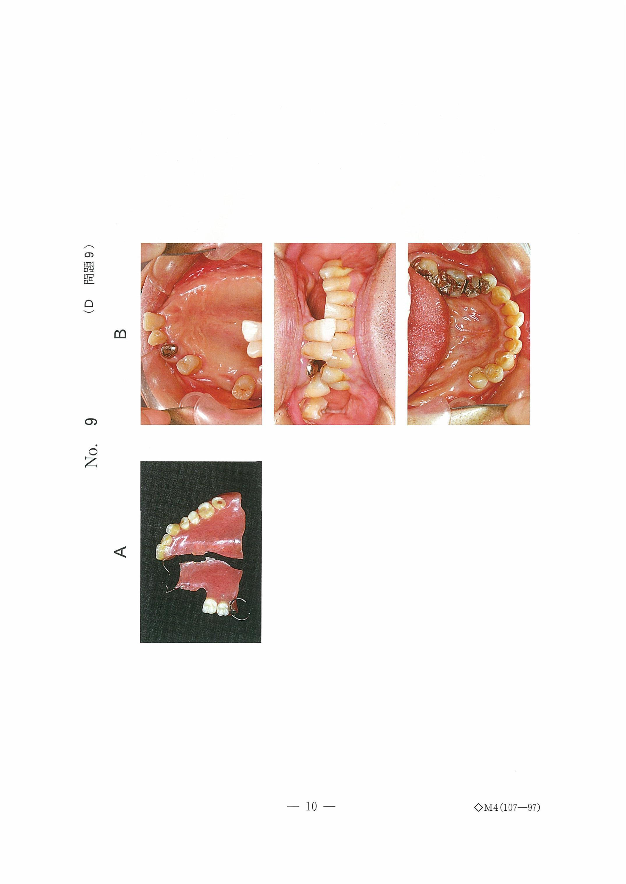
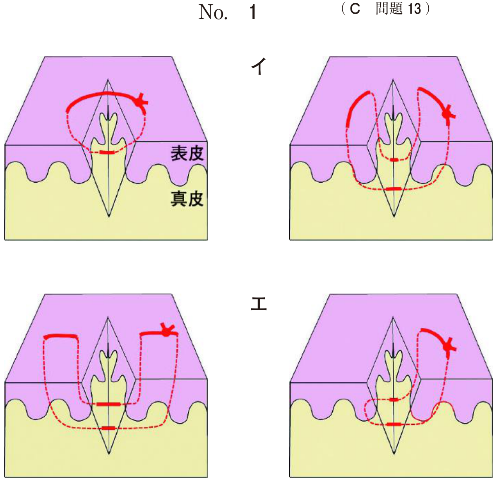

歯の異常
癒合歯
2歯の歯胚が発育途中で結合したもの。
特徴
- 下顎乳前歯部に好発
- 象牙質で結合（歯髄は別々または連続）
- 癒合部に溝（癒合溝）があり齲蝕リスク高い
- 齲蝕予防：癒合溝のシーラント・フッ化物塗布
- 歯根吸収：交換期に注意（吸収が不均等になることがある）
- 永久歯先天欠如：後継永久歯が1本欠如することがある
先天欠如歯
好発部位
| 頻度 | 歯種 |
|---|---|
| 最多 | 下顎第二小臼歯 |
| 2番目 | 上顎側切歯 |
| 3番目 | 下顎側切歯 |
関連する所見
- 乳歯の晩期残存（後継永久歯がないため脱落しない）
- 空隙歯列
- 乳歯癒合歯がある場合、後継永久歯の先天欠如リスクあり
過剰歯・埋伏歯の影響
上顎正中部の埋伏過剰歯を放置した場合の影響。
| 影響 | 説明 |
|---|---|
| 萌出方向の異常 | 過剰歯が隣在歯の萌出を妨げる |
| 歯根の形成障害 | 過剰歯による圧迫で歯根形成が阻害 |
| 正中離開 | 上顎中切歯間の空隙 |
| 萌出遅延 | 物理的障害による萌出障害 |
骨性癒着、歯冠の形態異常・色調異常は過剰歯の直接的影響ではない
乳歯埋伏を放置した場合の影響
- 後継永久歯の発育不全
- 歯列弓周長の縮小
- 隣在乳歯の発育不全
病変の縮小や自然萌出は期待できない
過去問
2歳の男児。下顎前歯の形の異常を母親が気にして来院した。初診時の口腔内写真（別冊No.19）を別に示す。管理するにあたって留意すべきなのはどれか。2つ選べ。

b 過剰歯
c 歯根吸収
d 発音障害
e 永久歯先天欠如
【解説】写真は下顎乳前歯の癒合歯。癒合歯の管理では歯根吸収（交換期に不均等な吸収）と永久歯先天欠如（後継永久歯が1本少ないことがある）に注意が必要。
6歳の男児。下顎前歯の形態異常を主訴として来院した。経過観察を行っている。初診時の口腔内写真（別冊No.11A）とエックス線写真（別冊No.11B）とを別に示す。定期健診時に留意すべきなのはどれか。2つ選べ。


b 咬 耗
c 歯冠破折
d 歯髄感染
e 生理的歯根吸収
【解説】癒合歯の経過観察では齲蝕（癒合溝が不潔域になりやすい）と生理的歯根吸収（交換期の歯根吸収が不均等になる可能性）に留意する。
乳歯列後期にエックス線検査で上顎正中部に埋伏過剰歯を認めた。そのままにしていた場合に上顎中切歯に生じる可能性が高いのはどれか。2つ選べ。
b 歯冠の形態異常
c 歯冠の色調異常
d 歯根の形成障害
e 萌出方向の異常
【解説】埋伏過剰歯を放置すると、隣在歯（上顎中切歯）に歯根の形成障害と萌出方向の異常が生じる可能性がある。骨性癒着や歯冠の形態・色調異常は過剰歯の直接的影響ではない。
8歳の男児。前歯部の空隙を主訴として来院した。永久歯の抜歯経験はない。初診時の口腔内写真（別冊No.5A）とエックス線画像（別冊No.5B）を別に示す。欠如している永久歯数（本）はどれか。1つ選べ。ただし、智歯は数に含めない。


b 6
c 8
d 10
e 12
【解説】X線画像から先天欠如歯を数える問題。パノラマX線で歯胚の有無を確認し、8本の永久歯が先天欠如していることがわかる。多数歯の先天欠如は先天性無歯症・部分無歯症の可能性がある。